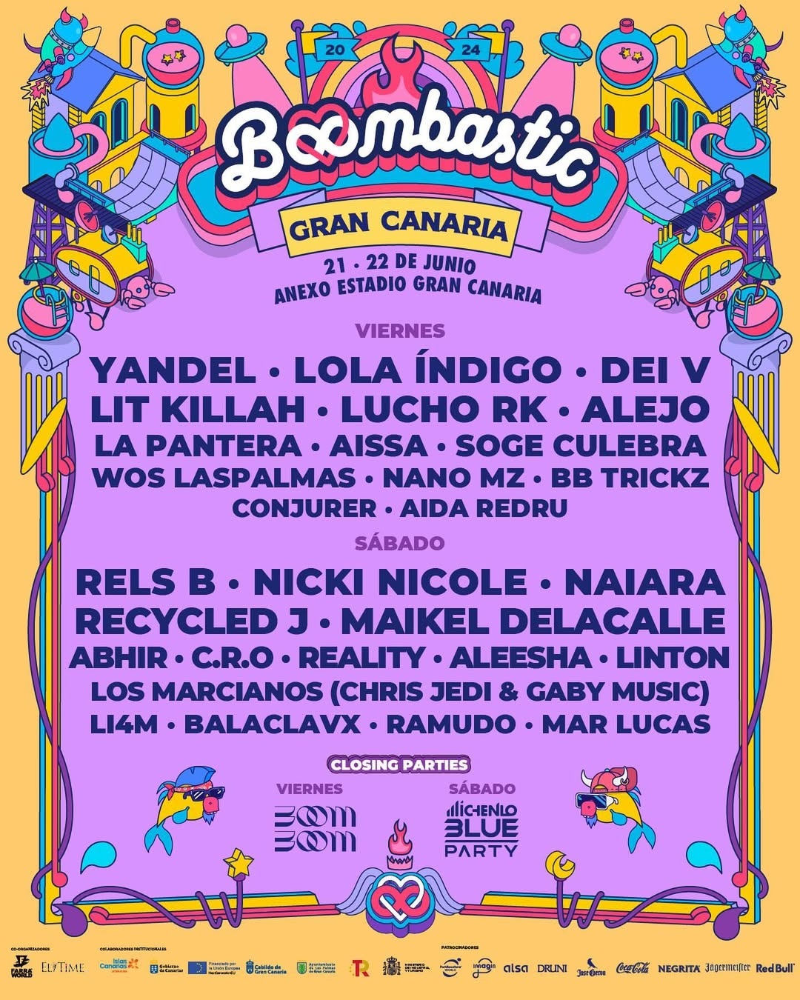
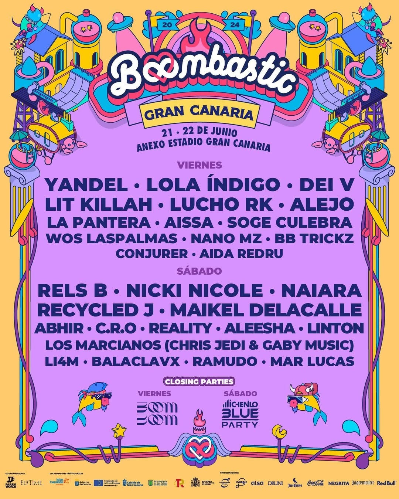

¿Que es el Boombastic? 
El Boombastic es un festival de música en el que acuden un sinfín de cantantes, la mayoría de género urbano (reggaetton, trap, rap).
Actualmente se celebra en distintos sitios de España, entre ellos se encuentran Madrid o Las Palmas de Gran Canaria.
Sin embargo, el mejor cartel de los últimos años, suele ser el de Asturias, trayendo cantantes como Quevedo, Eladio Carrion, Yandel, Paulo Londra, Duki, Bizarrap, Black Eyed Peas... Aunque tampoco las otras celebraciones de boombastic se quedan cortas, trayendo cantantes exclusivos a cada ciudad, como por ejemplo al Boombastic Canarias llevando a cantantes como Juseph o La Pantera.
Ediciones Anteriores
La primera edición del festival Boombi se celebró en Asturias durante el verano de 2021 y tuvo como principal atracción a C. Tangana, uno de los artistas más reconocidos del momento. Esta elección como cabeza de cartel generó un gran interés entre el público joven, consolidando rápidamente al festival como una cita imprescindible en la región. La presencia de C. Tangana, junto con una programación atractiva y una organización cuidada, hizo que Boombi se destacara frente a otros festivales de música ya establecidos en Asturias. Esta competencia sana contribuyó a diversificar la oferta cultural y a reforzar la escena musical local, atrayendo a un público variado y entusiasta.


 
